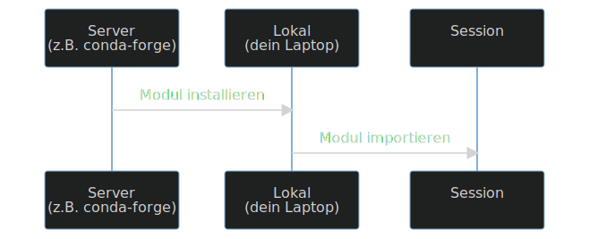

| Uhrzeit | ΔT | Thema |
|---|---|---|
| 13.00 - 13.30 | 30 | Module, Virtual Environments und Conda |
| 13.30 - 13.45 | 15 | Kapitel Conda, JupyterLab |
| 13.50 - 14.35 | 45 | Aufgabe 5 & Aufgabe 6 |
| 14.50 - 15.00 | 10 | Demo / Fragen |
| 15:00 - 15.35 | 35 | Aufgabe 7 & Aufgabe 8 |
| 15.50 - 16.25 | 35 | Aufgabe 8 & Aufgabe 9 |
| 16.25 - 16.35 | 10 | Wrap-up und Fragen |
Lernziele
- Ihr wisst was Python Erweiterungen / Module sind und wie man sie installiert
- Ihr kennt das Konzept von Conda Environments
- Ihr wisst was eine Working Directory ist und könnt diese abfragen und setzen
Themen
- Python Modules und Virtual Environments
- Conda
- Conda mit ArcGIS
- Keep your code tidy
- Primitive Datentypen kennengelernt
- Komplexe Datentypen kennengelernt
- Python in der Konsole bedient (ohne IDE)
- Python in der IDE JupyterLab bedient
- Boolean
- String
- Integer
- Float
- List
- Dict
- DataFrame
- Wie verhalten sich komplexe Datentypen zu den primitiven Datentypen?
- Von Lists, Dicts und DataFrames: Welcher Datetyp tanzt aus der Reihe (und warum)?
Conda
- Installation von Python Modules
- Verwalten von Virtual Environments


Wo werden diese Virtual Environments gespeichert?
Im Project Folder?
foo@bar:~$ conda env list
base /home/nils/miniconda3
biodiversity-monitor /home/nils/miniconda3/envs/biodiversity-monitor
biodiversity-streamlit /home/nils/miniconda3/envs/biodiversity-streamlit
copernicus /home/nils/miniconda3/envs/copernicus
geopandas-tutorial /home/nils/miniconda3/envs/geopandas-tutorial
geopython /home/nils/miniconda3/envs/geopython
grassland-streamlit /home/nils/miniconda3/envs/grassland-streamlit
ldm /home/nils/miniconda3/envs/ldm
mydifffusers /home/nils/miniconda3/envs/mydifffusers
r-env /home/nils/miniconda3/envs/r-env
xcube /home/nils/miniconda3/envs/xcube
Wie nutzt man Conda ?
- Schritt 1: Software herunterladen und installieren
- Schritt 2: Systemvariable setzen (falls nötig)
- Schritt 3: Eine Virtual Environment erstellen
- Schritt 4: Die Virtual Environment aktivieren
- Schritt 5: Modul installieren
Schritt 1: Software ("Miniconda") herunterladen und installieren
- CLI Software (kein GUI)
- wird mit ArcGIS Pro mitgeliefert
- Verwechslungsgefahr: Anaconda
Schritt 2: Systemvariable setzen
Nicht nötig in Python Command Prompt- Wenn ihr auf Windows arbeitet und ArcGIS installiert habt, ist conda vermutlich hier installiert:
C:\Program Files\ArcGIS\Pro\bin\Python\Scripts
Schritt 3: Eine Virtual Environment erstellen
# Test, ob Konda funktioniert:
foo@bar:~$ conda --version
# Wenn eine Versionsnummer erscheint üëç
conda 22.9.0
Schritt 3: Eine Virtual Environment erstellen
conda
create
--name
codingingis
- Ruft das Programm
condaauf - Ruft den Befehl
createvoncondaauf - Kündigt den Namen der neuen Umgebung an
- Bestimmt der Name der neuen Umgebung
C:\Users\rata\AppData\Local\ESRI\conda mit Enter / Y bestätigen

Schritt 4: Environment aktivieren
activate codingingis
codingingis

Schritt 5: Modul installieren

conda
install
-c
conda-forge
pandas
- Ruft das Programm
condaauf - Ruft den Befehl
installvoncondaauf - Kündigt der Name des channels an
- Ist der Name des channels
- Ist der Name des Python Moduls


jupyterlab
pandas
matplotlib
geopandas
descartes
jupyterlab installiert ist, könnt
ihr die Anwendung mit folgendem Befehl in die
Konsole starten: jupyter lab

conda?
- Wichtige Basis für Python
- Wird oft vorausgesetzt
- Wird meist unzureichend erklärt
- Verbindet zwei Welten


arcpy.analysis.SummarizeWithin("Wald_NichtWald",
"Tick_Original",
r"C:\unsicherheit.gdb\summary",
"KEEP_ALL",
None,
"ADD_SHAPE_SUM",
'',
None,
"NO_MIN_MAJ",
"NO_PERCENT",
None
)


conda install -c esri arcpy


Keep your code tidy!
import padnas as pd​
​pd.read_csv("zeckenstiche.csv")​
import pandas as pd​
zeckenstiche.head()
import os​
zeckenstiche = pd.read_csv("Zeckenstiche.txt")​
zeckenstiche = pd.read_csv("zeckenstiche.csv")
import padnas as pd​
import pandas as pd​
import os​
​pd.read_csv("zeckenstiche.csv")​
zeckenstiche.head()
zeckenstiche = pd.read_csv("Zeckenstiche.txt")​
zeckenstiche = pd.read_csv("zeckenstiche.csv")
import pandas as pd​
import os​
​#pd.read_csv("zeckenstiche.csv")​
zeckenstiche.head()
zeckenstiche = pd.read_csv("zeckenstiche.csv")
import pandas as pd​
import os​
​#pd.read_csv("zeckenstiche.csv")​
zeckenstiche = pd.read_csv("zeckenstiche.csv")
zeckenstiche.head()